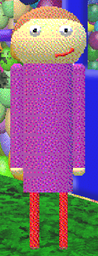

"Freddo" is the main character and antagonist in "Freddo's Awsome Math Game!"(/"FAMG"). He replaces Baldi.
Aliases
Freddo, Fredo, Fred.
Appearance
Freddo appears as a poorly modeled human. He wears a purple shirt, red pants, and brown shoes. His hair is brown. He has overly short legs with a cartoonishly long body. His lips are bright red.
Gallery

Trivia
Freddo uses outdated slang terms like; "Yeet" and "Dab".
Freddo's Epic "School" is more of his own personal funhouse.
It's unknown how Freddo opened a school at such a young age.
Freddo likes math but finds pretty much everything else about school boring.
Freddo was diagnosed with autism at nine years old.
Freddo is about 13 years old.
Freddo can teleport people.
Freddo thinks his Epic School is the coolest thing ever.